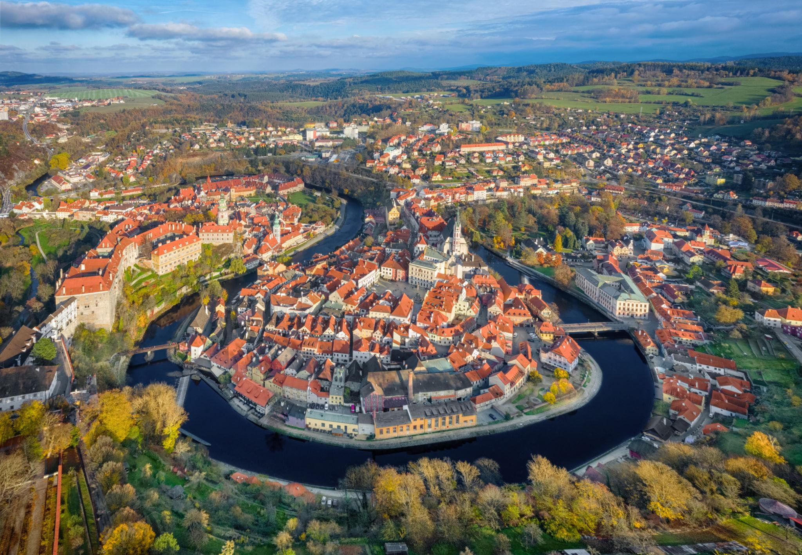
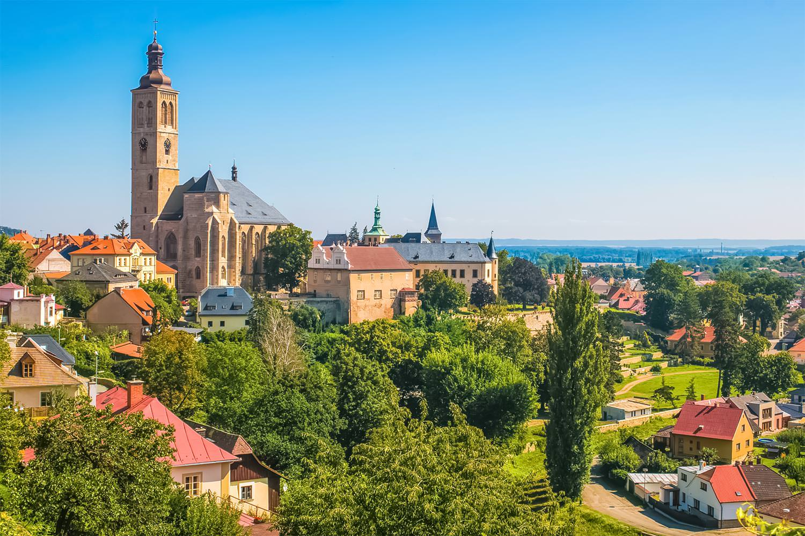
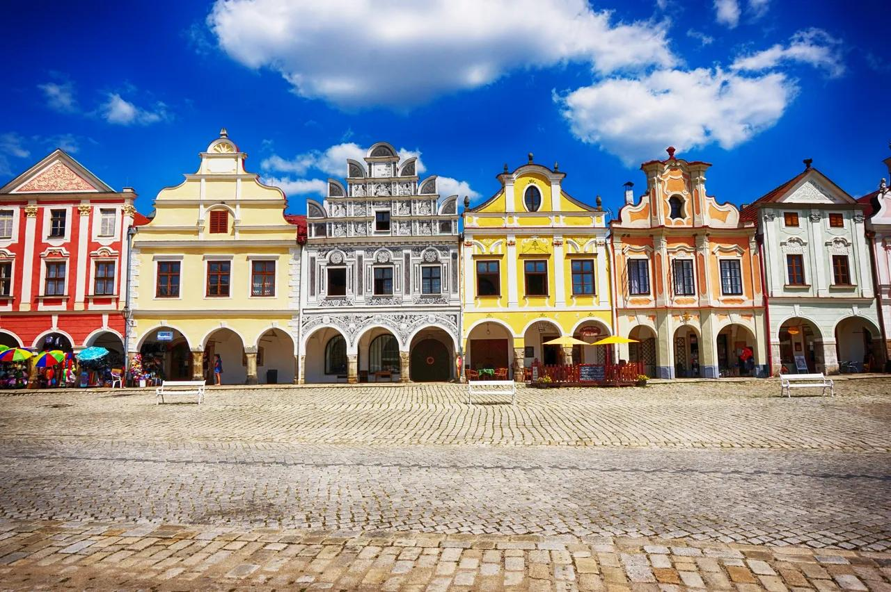
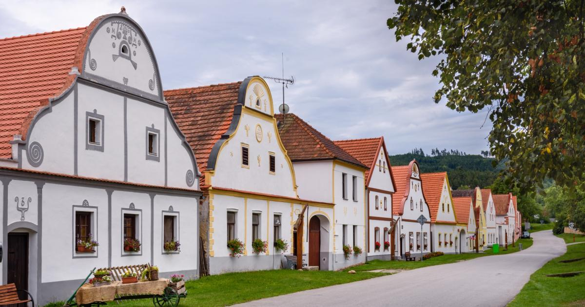
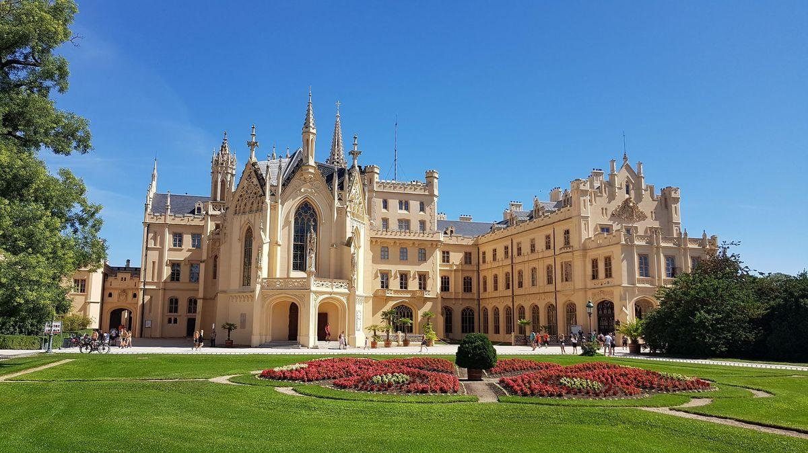
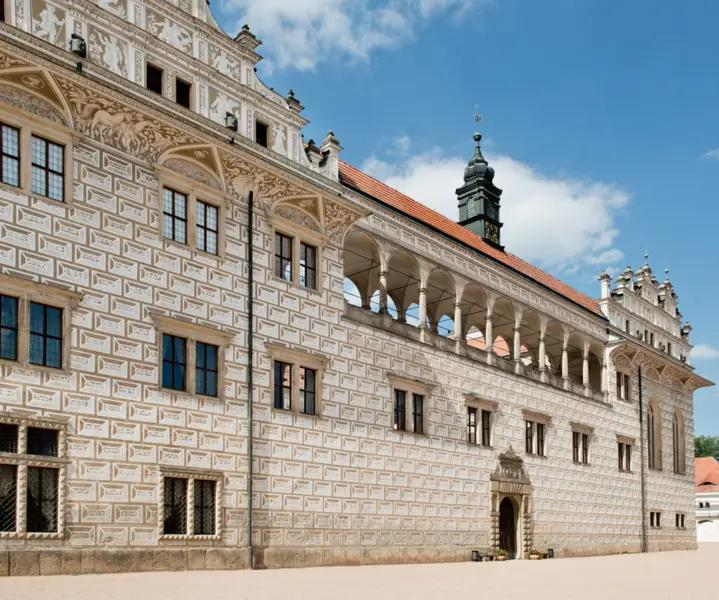

Český Krumlov
This beautiful historic town is famous for its medieval streets, Renaissance buildings and impressive castle overlooking the Vltava River. It was added to the UNESCO World Heritage List in 1992.

Explore remarkable places that preserve the history, culture and natural beauty of Czechia.
Czechia is home to numerous UNESCO World Heritage Sites that reflect its rich history, architecture and natural beauty. From historic towns and castles to unique cultural landscapes, these places preserve the stories and traditions of generations.
Discover some of the remarkable places in Czechia recognized for their outstanding cultural and historical value.
This beautiful historic town is famous for its medieval streets, Renaissance buildings and impressive castle overlooking the Vltava River. It was added to the UNESCO World Heritage List in 1992.

Kutná Hora became wealthy through silver mining. Its historic centre, St Barbara's Cathedral and the Cathedral of Our Lady at Sedlec reflect its important medieval history. It joined the UNESCO World Heritage List in 1995.

Telč is known for its beautiful Renaissance square, colorful historic houses and charming castle. Its well-preserved town centre became a UNESCO World Heritage Site in 1992.

Holašovice is a traditional South Bohemian village famous for its well-preserved rural architecture and colorful farmhouses. It represents the unique South Bohemian Folk Baroque style and joined the UNESCO World Heritage List in 1998.

This remarkable landscape combines magnificent chateaux, romantic gardens, parks and historic monuments. It became a UNESCO World Heritage Site in 1996.

Litomyšl Chateau is a remarkable example of Renaissance architecture, known for its beautiful sgraffito decorations and historic interiors. It became a UNESCO World Heritage Site in 1999.
UNESCO World Heritage Sites help preserve the places that make Czechia unique. By protecting these historic landmarks and cultural landscapes, we can share their stories with future generations.